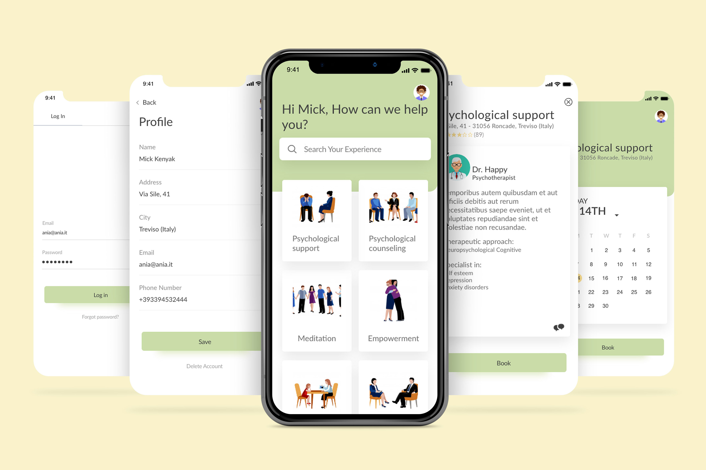
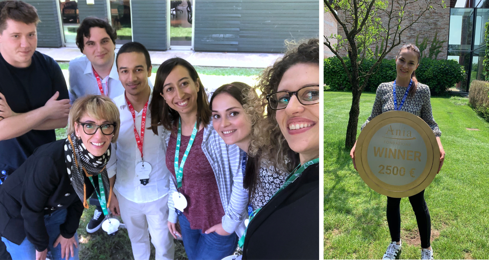
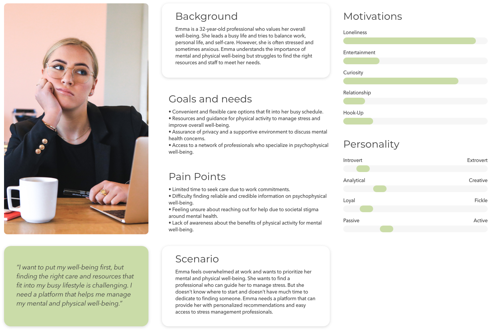

Context
Digital Transformation has transformed the personal care sector, redefining the concept of health and
well-being.
Opportunity statement
The national healthcare system has traditionally been perceived as lacking in technological innovation,
causing
limited access to treatments for psychophysical well-being and a lengthy process for consulting with a
doctor.
By integrating cutting-edge technologies into healthcare, we have the opportunity to improve efficiency,
offer more
personalized treatments, and foster a collaborative doctor-patient relationship.
To develop innovative solutions in the healthcare field, the Ania Foundation and H-Farm organized H-ack
Health, a
24-hour hackathon where 31 groups came together to develop innovative solutions in the healthcare field.
Challenge
The challenge was to create a more patient-centred healthcare system that:
-
fosters a holistic approach to health,
-
empowers individuals to take control of their well-being, and
-
provides easy access to a network of professionals (experiences) with relevant expertise.
Specifically, the team aimed to develop a platform that enables fast and easy access to the
professionals so that
the patients can easily find and receive the care they need.
My role
I led the experience strategy and design of the solution, producing and presenting all major
deliverables to the stakeholders. I worked alongside 2 developers, 3 marketers, and a UI designer.

Discovery
With no pre-existing insights, the team started digging to understand the challenges of people in need
of care. Although we didn't conduct primary interviews or surveys due to the time constraints of the
24-hour hackathon, we leveraged existing research to understand the personal care sector and the current
state of the healthcare system. Our approach included a market analysis, user insights from existing
platforms, and discussions with healthcare experts. These provided valuable insights into personal care,
psychophysical well-being, healthcare challenges, trends, and user needs..
Insights gained from our research:
- Most people aren't aware that it is necessary to take care of the body as well to achieve well-being. If the body is healthy, the person is happy.
- People suffering from a mental disorder are ashamed to seek treatment because it is widespread the implementation of a social distance towards people with mental illnesses
- Many people don't know that physical activity is important because it relieves anxiety and stress, and thanks to the endorphins produced by the body it makes us feel happy and satisfied.
- The process of seeking healthcare through the national system in Italy is perceived as time-consuming.
- Most people don't know where to turn to ask for psychophysical help.
Persona: Emma, the health seeker

The solution
A solution that aims to implement psychophysical well-being by offering "experiences" led by professionals.
- PROFESSIONAL NETWORK: Haware offers a variety of professionals, including psychologists, nutritionists, fitness trainers, yoga instructors, and other experts in psychophysical well-being. Users can browse profiles, read reviews, and select professionals based on their needs and preferences.
- EASY TO BOOK APPOINTMENTS: The solution offered an easy-to-use booking system. Users can check the availability, select preferred time slots, and book appointments with a few clicks. Reminders and notifications prevent missed sessions.
- VIRTUAL CONSULTATIONS: Our platform offers secure video or chat sessions with professionals, eliminating geographic barriers.
- PERSONALISED EXPERIENCE:The solution offered experiences such as stress management, mindfulness, nutrition counselling, and fitness regimes to meet specific needs and guide individuals toward holistic health.
- EDUCATIONAL RESOURCES: Haware offers articles, videos, webinars, and content created by professionals to empower users with knowledge about mental and physical wellness.
- SUPPORTIVE COMMUNITY: We foster a supportive community where users can participate, share experiences, and receive advice in forums, group chats, and online communities.
- PRIVACY AND DATA SECURITY: We foster a supportive community where users can participate, share experiences, and receive advice in forums, group chats, and online communities.
Key metrics and goals of success
Success for Haware lies in demonstrating the app's effectiveness in promoting psychophysical well-being, providing
value to users, and a sustainable business model. This includes iterative improvements based on user feedback and
market trends.
USER ADOPTION AND ENGAGEMENT
-
Increasing number of app downloads and user registrations.
-
High user engagement metrics, such as active daily or monthly users and session duration.
- Regular and frequent use of the app by users, indicating its value and relevance in their psychophysical
well-being journey.
-
Positive user feedback and ratings indicate satisfaction with the app's features, content, and overall
experience.
COMPLETION AND PROGRESS TRACKING
-
High completion rates of enrolled experiences, indicate that users are actively participating and completing the
offered activities.
-
Tracking user progress and achievements within the app, providing a sense of accomplishment and motivation.
-
Users setting and reaching personal goals related to psychophysical well-being through the app.
USER SATISFACTION AND FEEDBACK
-
Conducting user surveys or collecting feedback to assess user satisfaction with the app's functionalities,
usability, and overall experience.
-
Continuous improvement of the app based on user feedback and addressing any pain points or areas of improvement.
-
Positive user testimonials and recommendations, indicating that the app has made a positive impact on users'
well-being.
PROFESSIONAL ENGAGEMENT AND COLLABORATION
-
Active participation of professionals in the app's network, offering experiences, providing guidance, and
interacting with users.
-
Positive feedback and ratings from users regarding their interactions and experiences with professionals.
-
Growth in the number of professionals joining the platform, indicating the value and reputation of the app
within the psychophysical well-being community.
IMPACT ON USER WELL-BEING
-
Measuring the impact of the app on users' psychophysical well-being through qualitative and quantitative
assessments.
-
Conducting pre and post-app usage surveys or assessments to measure improvements in users' mental and physical
well-being.
-
Tracking users' reported reduction in stress, increased happiness, improved self-awareness, or other desired
outcomes related to psychophysical well-being.
BUSINESS SUCCESS
-
Achieving sustainable revenue models, such as through subscriptions, partnerships, or in-app purchases.
-
Increasing brand awareness and recognition within the psychophysical well-being space.
-
Building a loyal user base that continues to use and advocate for the app.
-
Expanding the app's reach to a wider audience or exploring partnerships with relevant organizations or
institutions.
Learnings
-
Understanding the challenges and needs of the target audience is crucial in creating a solution that effectively addresses their concerns.
-
Innovative solutions that integrate technology with healthcare can significantly improve healthcare efficiency and provide more personalised treatments.
-
Collaborating with a diverse team of professionals with different skill sets can lead to a more comprehensive and effective solution.
-
The process of discovering and uncovering insights is essential in identifying the underlying problems and needs of the target audience, and can inform the development of a successful solution.
-
Education and awareness about the importance of both physical and mental health can help reduce stigma and increase access to care.
-
Time-consuming and complicated healthcare processes can discourage people from seeking treatment, highlighting the need for more streamlined and efficient healthcare delivery.